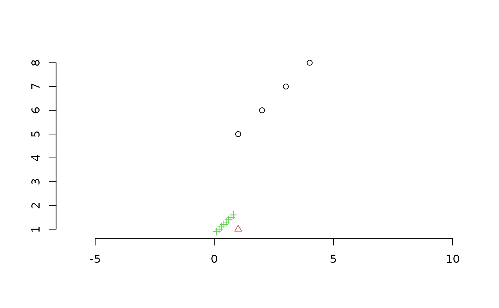

Cluster size statistics
Usage
SumOfRanges(x, cluster = 1)
SumOfVariances(x, cluster = 1)
SumOfVars(x, cluster = 1)
MeanCentroidDistance(x, cluster = 1, Average = mean)
MeanCentDist(x, cluster = 1, Average = mean)
MeanCentroidDist(x, cluster = 1, Average = mean)
DistanceFromMedian(x, cluster = 1, Average = mean)
DistFromMed(x, cluster = 1, Average = mean)
MeanNN(x, cluster = 1, Average = mean)
MeanMSTEdge(x, cluster = 1)Arguments
- x
Matrix in which each row lists the coordinates of a point in a Euclidian space; or, where supported,
distobject specifying distances between each pair of points.- cluster
Optional integer vector specifying the cluster or group to which each row in
xbelongs.- Average
Function to use to summarize distances. Defaults to
mean; specifyingmedianreturns a value akin to the median absolute divergence (seemad).
Value
SumOfRanges() returns a numeric specifying the sum of ranges
within each cluster across all dimensions.
SumOfVariances() returns a numeric specifying the sum of variances
within each cluster across all dimensions.
MeanCentroidDistance() returns a numeric specifying the mean
distance from the centroid to points in each cluster.
DistanceFromMedian() returns a numeric specifying the mean distance
of each point (except the median) from the median point of its cluster.
MeanNN() returns a numeric specifying the mean distance from each
point within a cluster to its nearest neighbour.
MeanMSTEdge() returns a numeric specifying the mean length of an
edge in the minimum spanning tree of points within each cluster.
See also
Other tree space functions:
Islands(),
MSTSegments(),
MapTrees(),
MappingQuality(),
SpectralEigens(),
median.multiPhylo()
Other cluster functions:
KMeansPP()
Examples
points <- rbind(matrix(1:16, 4), rep(1, 4), matrix(1:32, 8, 4) / 10)
cluster <- rep(1:3, c(4, 1, 8))
plot(
points[, 1:2], # Plot first two dimensions of four-dimensional space
col = cluster, pch = cluster, # Style by cluster membership
asp = 1, # Fix aspect ratio to avoid distortion
ann = FALSE, frame = FALSE # Simple axes
)

SumOfRanges(points, cluster)
#> [1] 12.0 0.0 2.8
SumOfVariances(points, cluster)
#> [1] 6.666667 NA 0.240000
MeanCentroidDistance(points, cluster)
#> [1] 2.0 0.0 0.4
DistanceFromMedian(points, cluster)
#> [1] 2.6666667 NA 0.4571429
MeanNN(points, cluster)
#> [1] 2.0 NA 0.2
MeanMSTEdge(points, cluster)
#> [1] 2.0 NA 0.2